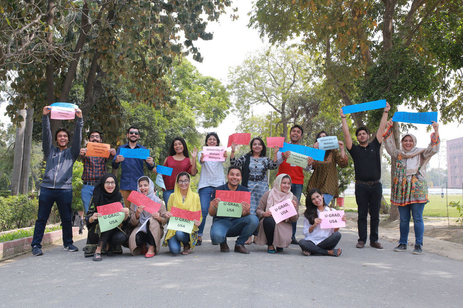
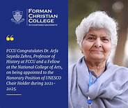
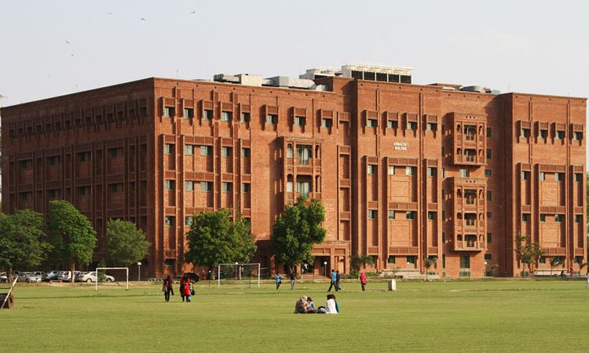

News
-

31st January 2021 by
About the Institutional Review Board
The Forman Christian College University Institutional Review Board (IRB) is charged with reviewing human and animal subjects research. FCCU is committed to protect one's privacy.
Read More -

31st January 2021 by
Software Engineering Research Group (SERG)
We investigate product, processes and people in software engineering.”
Read More -

31st January 2021 by
Artificial Intelligence and Machine Learning (AI/ML) Research Group
The Artificial Intelligence group at FCCU is actively involved in foundational research in core areas of knowledge representation.
Read More